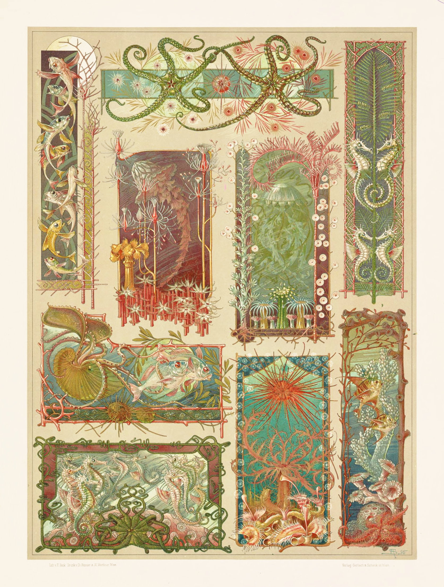
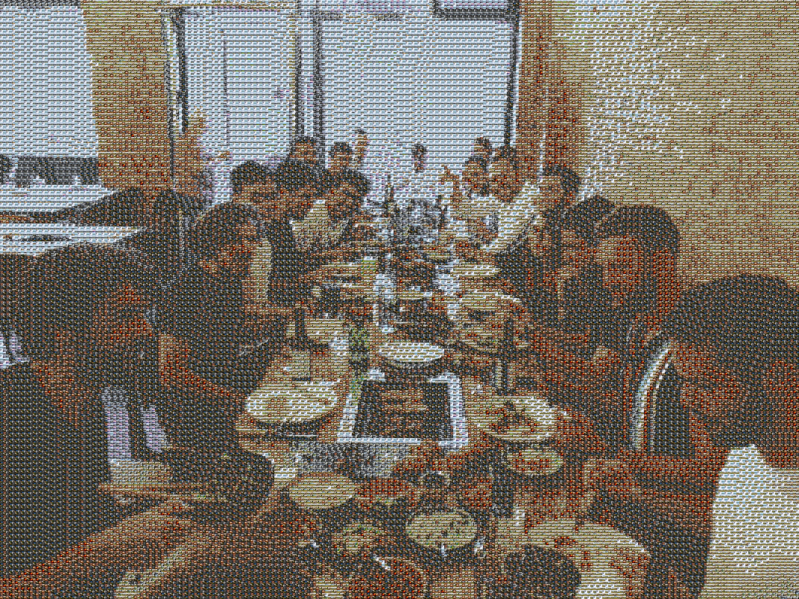

WARNING: Vibe Coding and Security
This repository is an experimental "vibe coding" project (AI-assisted rapid iteration). Users should never expose API keys or OAuth credentials in public code. Always use .env files and secure HTTPS endpoints.
Web Live Test Limits
To optimize client browser resources and online rendering performance, online web testing parameters are capped at: Max target resolution 1080p, Max tile pool count 200 images, Tile stride minimum 10px, and Video max frame rate 30 FPS.
Photomosaic Result Showcase
Sample created using a open Nature / Landscape image bank downloaded from Wikimedia Commons.
Original Target Image

Photomosaic (Nature Image Bank)

Key Architectural Innovations
CIELAB & 2x2 Sub-Grid
Uses perceptual L*a*b* color space matching and sub-quadrant feature vectors to preserve gradients and local tile textures.
Theme Image Banks
Download stock and open-license photo collections on demand from Lorem Picsum, Wikimedia Commons, Archive.org, Openverse, Unsplash, Pexels, and Pixabay.
Cloud Media Connectors
Modular connectors for self-hosted Immich instances, Google Photos API, and WebDAV / Nextcloud personal libraries.
Quick Start Guide
# 1. Clone repository
git clone https://github.com/HaBODALL/Photomosaic-generator.git
cd Photomosaic-generator
# 2. Install package
pip install -e .
# 3. Launch Web Studio GUI
streamlit run app.py
# 4. Generate photomosaic using a downloaded nature image bank
photomosaic download --source wikimedia --theme "nature" --limit 50 --output nature_pool
photomosaic image -i data/input.jpg -o data/output.jpg -p nature_pool -s 15 --color_space lab